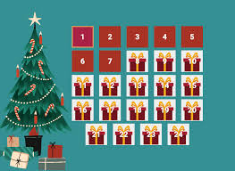
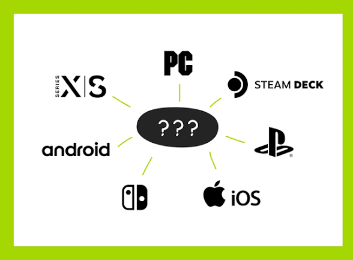

First Macguffin: What is Gaming?
Gaming is the activity of playing online (or offline) games, which can be done for entertainment, competition, or educational purposes. From the 8-bit pixels to the immersive virtual worlds of modern ray tracing, gaming has evolved into a global phenomenon that transcends age, culture, and geography.
Prompt: Describe the evolution of gaming from its early days to modern immersive experiences.
Whether it's the nostalgia of classic arcade games or the cutting-edge graphics of today's titles, gaming offers a diverse range of experiences that cater to all kinds of players. From casual mobile games to competitive esports, gaming has become a central part of modern culture and entertainment.
Second Macguffin: Who Plays Games?
Gaming is a universal activity that attracts people from distant corners of the world; me included. My interests range from turn-based RPGs to side-scrolling platformers, and I enjoy both single-player narratives and multiplayer competitions. Gaming has become a significant part of my life, providing not only entertainment but also a sense of community and connection with others who share similar interests.
Prompt: Describe the diversity of the gaming community and how it brings people together.
Third Macguffin: When Do People Play Games?
Gaming is a time-honored activity that is defined by seasonal events in-game, special occasions, and community gatherings. Gaming can also be spent as an alone-time activity apart of one's schedule, where players can immerse themselves in a captivating story or challenge their skills in a competitive match against other users or with their friends.
| Seasonal Events | Special Occasions | Community Gatherings | Average Play-Time |
|---|---|---|---|
| Festivities (Winter Solstice) | Steam Seasonal Sales & AAA Releases | Esports Tournaments & LAN Parties | 1-2 hours daily, more on weekends |
| Spring | Spring Sales & Indie Game Showcases | Game Jams & Online Multiplayer Events | Moderate |
| Summer | Summer Sales & Gaming Conventions | Esports Championships & Community Meetups | Increased during vacations |

Fourth Macguffin: Where Do People Play Games?
Gaming can be enjoyed in various settings, from the comfort of one's home to public gaming centers, on-the-go with mobile devices, and even arcade games. The rise of online gaming has also created virtual spaces where players can connect and play together regardless of their physical location.
Prompt: Describe the various locations where people play games and how technology has enabled gaming in different environments.
Whether it's a cozy living room setup, a bustling internet cafe, or a mobile gaming session during a commute, gaming has become an accessible and versatile form of entertainment that can be enjoyed anywhere and anytime.
Fifth Macguffin: Why Do People Play Games?
People play games for a variety of reasons, including entertainment, social connection, stress relief, and personal growth. Gaming can provide an escape from reality, allowing players to immerse themselves in fantastical worlds, engaging narratives, and establish common ground with other users on a certain topic of interest.
Prompt: Describe the various reasons why people play games and how gaming can benefit individuals in different ways.
Additionally, gaming can serve as a form of stress relief and a way to unwind after a long day. It can also promote personal growth by challenging players to develop problem-solving skills, strategic thinking, and creativity. Overall, gaming offers a multifaceted experience that caters to a wide range of motivations and benefits for players.
Sixth Macguffin: How Do People Play Games?
People play games using various platforms and devices, including PCs, consoles, handheld devices, and mobile phones. As long as a user is connected to the internet and their specifications meet the requirements, they can play their favorite games from anywhere.
- PC Gaming: Many gamers prefer playing on a personal computer due to the flexibility and customization options it offers. PC gaming allows for high-end graphics, modding capabilities, and access to a vast library of games through platforms like Steam.
- Console Gaming: Consoles such as the PlayStation, Xbox, and Nintendo Switch provide a more streamlined gaming experience with exclusive titles and user-friendly interfaces. They are popular for their ease of use and social gaming features.
- Handheld Devices: Handheld gaming devices like the Nintendo Switch and Steam Deck offer portability without sacrificing performance. They allow gamers to enjoy their favorite titles on the go.
- Mobile Gaming: Mobile phones have become a dominant platform for gaming, with a wide variety of games available on app stores. Mobile gaming is accessible to a broad audience and often includes casual games that can be played in short sessions.

Prompt: Describe the different platforms and devices people use to play games and how technology has evolved to support gaming on various mediums.
Whether it's through a high-end gaming PC, a popular console like the PlayStation or Xbox, a portable device like the Nintendo Switch, or a mobile phone, gaming has become accessible to a wide audience. The evolution of technology has also led to innovations such as cloud gaming and virtual reality, further expanding the ways in which people can experience and enjoy games.
AI Prompts
Throughout this website, you will find various AI prompts that encourage you to reflect on different aspects of gaming. These prompts are designed to spark your creativity and critical thinking about the gaming industry, its impact on culture, and your personal experiences with gaming.
- Describe the evolution of gaming from its early days to modern immersive experiences.
- Describe the diversity of the gaming community and how it brings people together.
- Describe the various locations where people play games and how technology has enabled gaming in different environments.
- Describe the various reasons why people play games and how gaming can benefit individuals in different ways.
- Describe the different platforms and devices people use to play games and how technology has evolved to support gaming on various mediums.